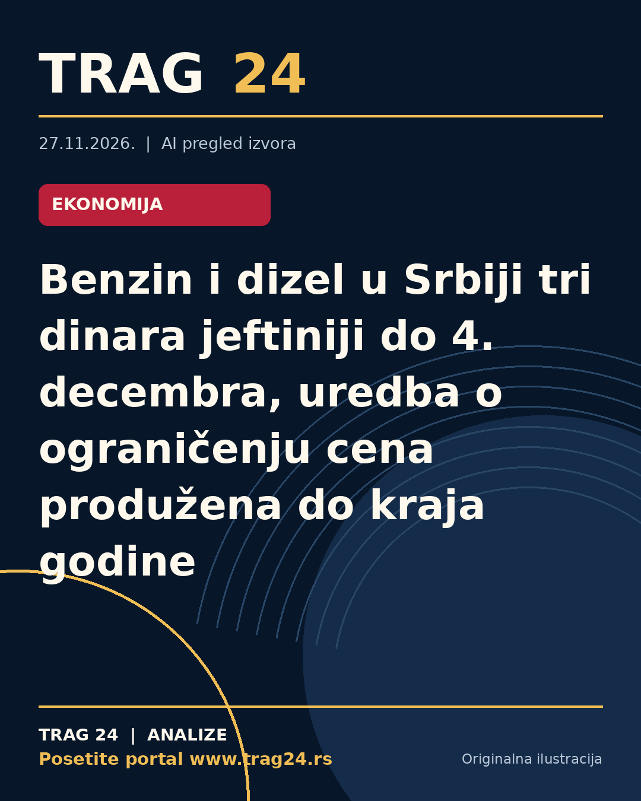

Benzin i dizel u Srbiji tri dinara jeftiniji do 4. decembra, uredba o ograničenju cena produžena do kraja godine

ŠTA SE DOGODILO
Ministarstvo trgovine Srbije objavilo je da od danas od 15 časova gorivo na pumpama u Srbiji postaje jeftinije za tri dinara po litru. Ovo važi za benzin i dizel i trajat će sedam dana, do 4. decembra u isto vreme. Istovremeno, produžena je uredba o ograničenju visine cena derivata nafte do 31. decembra ove godine, čime su zagarantovane maksimalne maloprodajne cene goriva za period do kraja godine.
HRONOLOGIJA
Uredba o ograničenju cena derivata nafte, kojom se regulišu maksimalne maloprodajne cene, važi produženo do kraja tekuće godine. Od danas, 27. novembra sa početkom u 15 časova, cena benzina i dizela na pumpama u Srbiji spuštena je za tri dinara po litru. Planirano je da ova akcija traje sedam dana, do 4. decembra u 15 časova.
ŠTA NAVODE IZVORI
Prema objavama Ministarstva trgovine, cena dizela biće 233 dinara po litru, dok je cena benzina 201 dinar po litru. Za poljoprivrednike, cena dizela ostaje nepromenjena i iznosi 184 dinara po litru. Ove informacije prenose izvori Nova ekonomija i Insajder, koji ukazuju da je uredba o ograničenju cena derivata produžena do kraja godine kako bi se obezbedila cena goriva na regulatorni način. Obe informacije, iako sa različitim detaljima, zapravo su usklađene i potvrđuju istu uredbu i aktuelne cene.
ŠTA JE POTVRĐENO
Sa sigurnošću je potvrđeno da će benzin i dizel u Srbiji od danas do 4. decembra pojeftiniti za tri dinara po litru, kao i da je uredba o maksimalnim cenama proizvoda od nafte produžena do 31. decembra 2023. godine. Potvrđene su i nove cene goriva nakon sniženja, kao i činjenica da cena dizela za poljoprivrednike nije promenjena.
ŠTA NIJE POTVRĐENO
Nema informacija o eventualnim promenama u cenama drugih vrsta goriva osim benzina i dizela ili o tome da li bi uredba mogla biti izmenjena pre kraja godine. Takođe, nisu izneti detalji o tome da li će eventualno doći do dodatnih promena cena ili kakav bi mogao biti njihov uticaj na tržište goriva u Srbiji posle isteka narednih sedam dana.
ŠTA OSTАJE OTVORENO: Ostaje nejasno da li će nakon isteka vladine uredbe doći do daljih korekcija cena goriva i na koji način će se odvijati tržišna regulativa u 2024. godini. Takođe, otvoreno je pitanje kako će se eventualne buduće promene cena odraziti na potrošače i poljoprivredni sektor, posebno imajući u vidu da je cena dizela za poljoprivrednike ostala nepromenjena.
Izvori
- https://novaekonomija.rs/vesti-iz-zemlje/benzin-i-dizel-do-sledeceg-petka-jeftiniji-po-tri-dinara
- https://insajder.net/prenosimo/benzin-i-dizel-jeftiniji-u-narednih-sedam-dana-uredba-o-ogranicenju-cena-derivata-produzena-do-kraja-godine
Ova analiza je pripremljena uz pomoć veštačke inteligencije na osnovu javno dostupnih izvora. Navodi izvora nisu nužno nezavisno potvrđeni.